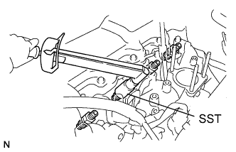

ТОПЛИВНАЯ ФОРСУНКА > УСТАНОВКА |
| 1. INSTALL NOZZLE HOLDER AND NOZZLE SET |
|  |
Install 4 new injection nozzle seat gaskets and the 4 injection nozzle seats to the injection nozzle holes of the cylinder head.
Using SST, install the 4 nozzle holder and nozzle sets.
| 2. INSTALL NOZZLE LEAKAGE PIPE ASSEMBLY |
Install 4 new ring packing washers and the leakage pipe with the 4 nuts.
Connect the fuel hose to the leakage pipe.
| 3. INSTALL NO. 1 GLOW PLUG CONNECTOR |
Install the No. 1 glow plug resistor insulator and No. 1 glow plug connector.
 |
Install the glow plug connector with the 4 nuts. Uniformly tighten the nuts.
| *1 | Nut |
| *2 | Washer |
| *3 | No. 2 Glow Plug Resistor Insulator |
| *4 | Engine Wire |
| *5 | No. 1 Glow Plug Connector |
| *6 | No. 1 Glow Plug Resistor Insulator |
| *7 | Bolt |
Install the 4 screw grommets.
Connect the engine wire and install the No. 2 glow plug resistor insulator and washer with the bolt.
| 4. INSTALL INJECTION PIPE SET |
Install the 2 lower clamps to the intake manifold.
 |
Install the 4 injection pipes.
| *a | for Injection Nozzle Side |
| *b | for Injection Pump Side |
Install the 2 upper pipe clamps with the 2 nuts.
| 5. INSTALL DIESEL THROTTLE BODY |
Install the diesel throttle body (See page Нажмите здесь).
| 6. CONNECT CABLE TO NEGATIVE BATTERY TERMINAL |
| 7. BLEED INJECTION PIPE |
Move the hand pump on the upper part of the fuel filter up and down and fill the injection pump and fuel system with fuel.
Loosen one of the union nuts (on the nozzle side).
Crank the engine until fuel comes out from the union nut connection (on the nozzle side).
Tighten the union nut.
Perform the procedures above for each injection pipe.
| 8. INSPECT FOR FUEL LEAK |
Check that there are no fuel leaks anywhere in the fuel system after performing maintenance.